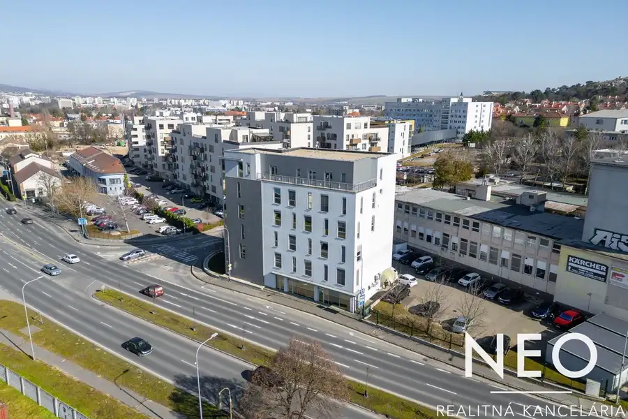
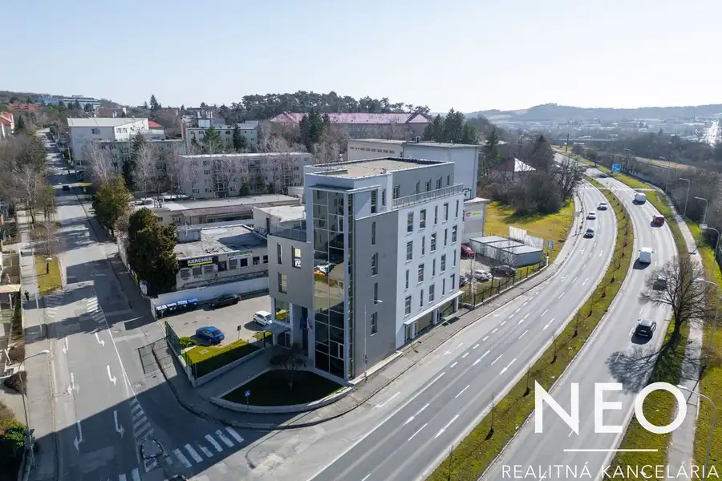
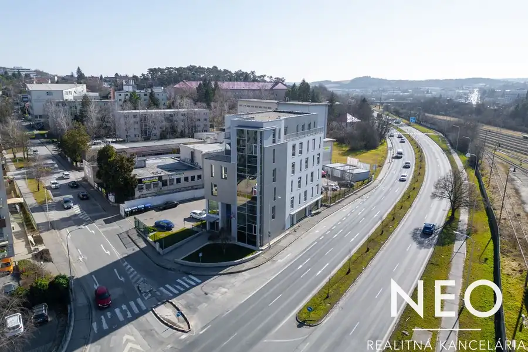

NEOREAL | Moderný administratívny objekt na predaj - Rázusova ulica, Nitra
Nitra



- Plocha1633 m²
- StavNovostavba
- VlastníctvoFiremné
- Energetická triedaC
O nehnuteľnosti
Realitná kancelária NEOREAL ponúka na predaj moderný administratívny objekt v lukratívnej lokalite Nitry, na Rázusovej ulici. Budova sa nachádza na frekventovanom dopravnom uzle v križovatke Rázusovej a Novozámockej ulice, s excelentnou dostupnosťou do centra mesta, na rýchlostnú cestu R1 a k všetkým dôležitým inštitúciám. V blízkosti sa nachádzajú obchodné prevádzky, banky, reštaurácie, zastávky MHD aj administratívne centrá.Charakteristika objektuRok kolaudácie: 2008Výmera pozemku: 1910 m²Počet nadzemných podlaží: 6Celková úžitková plocha: 1633 m²Počet parkovacích miest: 28 Konštrukcia: Moderná železobetónová konštrukcia s veľkoplošným presklením pre dostatok prirodzeného svetlaVybavenie: Výťah, klimatizácia, štruktúrovaná kabeláž, zabezpečovací systém, recepcia, oddychová zónaDispozícia a využitieBudova je primárne určená na administratívne účely, pričom ponúka priestranné kancelárske priestory s variabilným usporiadaním, ktoré možno prispôsobiť potrebám nového majiteľa. Priestor je moderný, svetlý a prispôsobený náročným požiadavkám firemného prostredia.Aktuálny stav prenájmuV súčasnosti je objekt plne obsadený a dlhodobo prenajatý Nitrianskemu samosprávnemu kraju, čo z neho robí ideálnu investičnú príležitosť s garantovaným stabilným výnosom.Lokalita a dostupnosťCentrum Nitry: 5 minút automRýchlostná cesta R1: 3 minútyObchodné centrá a občianska vybavenosť: v bezprostrednej blízkostiVerejná doprava: Zastávky MHD v pešej dostupnostiInvestičná príležitosťTáto nehnuteľnosť je ideálnou voľbou pre investorov, ktorí hľadajú stabilný výnos z prenájmu, alebo pre spoločnosti, ktoré potrebujú reprezentatívne kancelárske priestory vo výbornej lokalite.Cena 3.900.000€V prípade záujmu o obhliadku alebo viac informácií nás neváhajte kontaktovať:Mgr. Michal Žitník | zitnik@neoreal.sk | +421 911 123 474
Parametre
- Druh
- Administratívny objekt
- Dátum zverejnenia
- 10. 03. 2025
- Elektrina
- Na pozemku - 400 V
- Energetický certifikát budovy
- C
- Odpadové vody
- Na pozemku - Kanalizácia
- Plocha pozemku
- 1910 m²
- Plyn
- Na pozemku
- Počet nadzemných podlaží
- 6
- Rok kolaudácie
- 2008
- Rok výstavby
- 2006
- Stav nehnuteľnosti
- Novostavba
- Typ
- Predaj
- Typ konštrukcie
- Zmiešaná
- Vlastníctvo
- Firemné
- Voda
- Na pozemku - Diaľkový vodovod
- Vybavenie
- Výťah
- Vybavenie objektu
- Štandardné
- Vykurovanie
- Ústredné
- Zastavaná plocha
- 343 m²
- Úžitková plocha
- 1633 m²